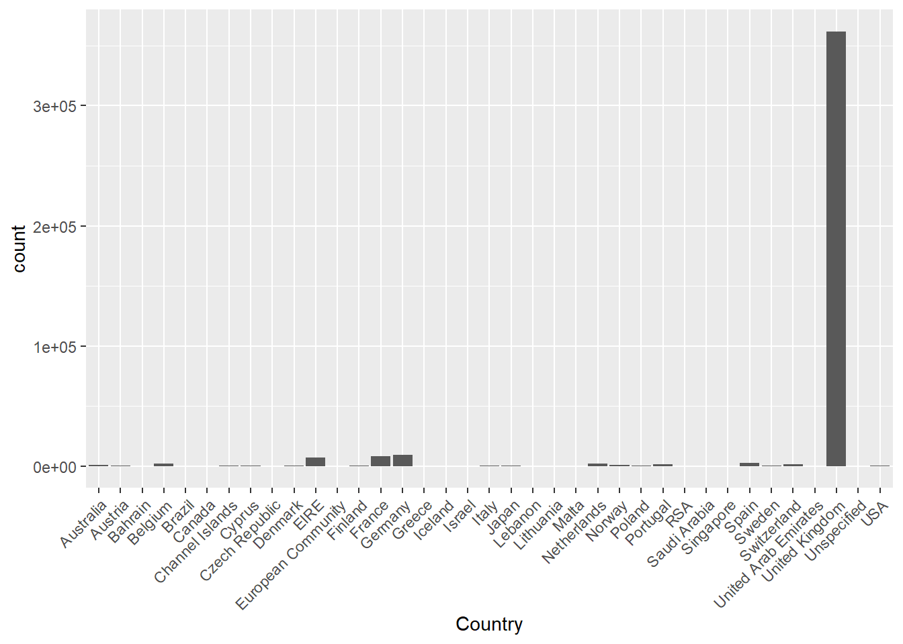
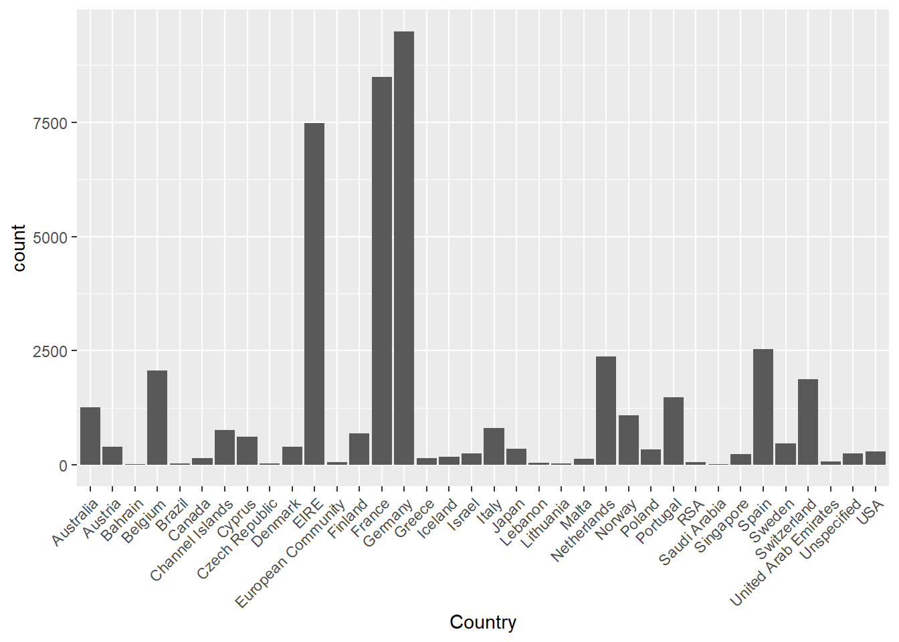
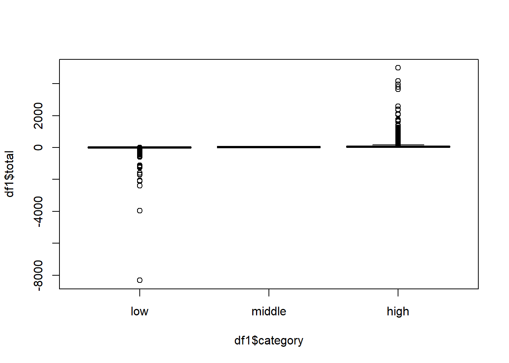
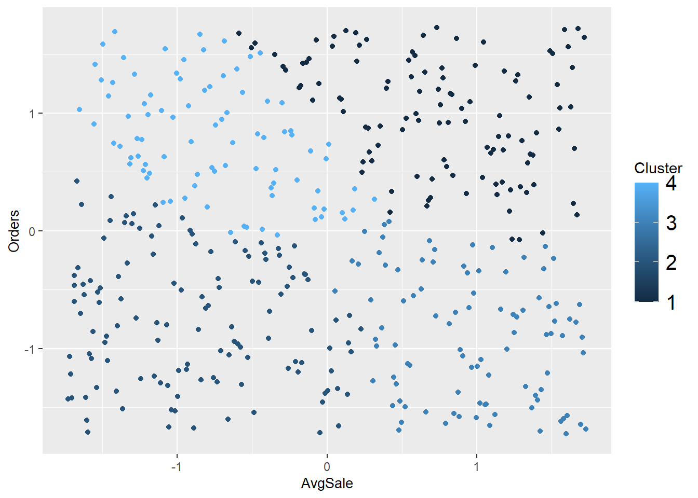
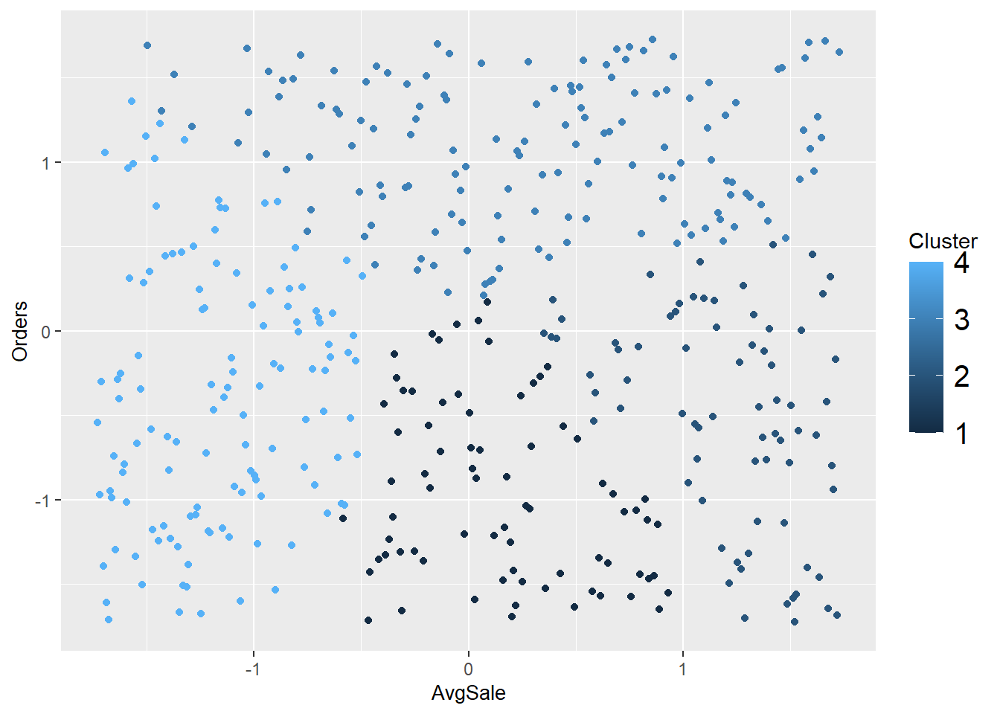

library(rlang)
library(haven)
library(dplyr)
library(tidyverse)
library(ggplot2)
library(fastDummies)
library(equatiomatic)
library(car)
library(sjPlot)
library(MASS)
library(lmtest)
library(gmodels)
library(tidyr)
library(sjmisc)
library(sjlabelled)
library(naniar)
library(cluster)
library(factoextra)4 Analysis
First we read data from a local CSV file:
data <- read_csv("C:/Users/Addison/OneDrive/Documents/SCHOOL/Advanced Statistical Modeling/data.csv")Rows: 541909 Columns: 8
-- Column specification --------------------------------------------------------
Delimiter: ","
chr (5): InvoiceNo, StockCode, Description, InvoiceDate, Country
dbl (3): Quantity, UnitPrice, CustomerID
i Use `spec()` to retrieve the full column specification for this data.
i Specify the column types or set `show_col_types = FALSE` to quiet this message.Remove any disruptive null values from the the base data and view summary statistics of each available field:
clean_data_uk <- na.omit(data)
summary(clean_data_uk) InvoiceNo StockCode Description Quantity
Length:406829 Length:406829 Length:406829 Min. :-80995.00
Class :character Class :character Class :character 1st Qu.: 2.00
Mode :character Mode :character Mode :character Median : 5.00
Mean : 12.06
3rd Qu.: 12.00
Max. : 80995.00
InvoiceDate UnitPrice CustomerID Country
Length:406829 Min. : 0.00 Min. :12346 Length:406829
Class :character 1st Qu.: 1.25 1st Qu.:13953 Class :character
Mode :character Median : 1.95 Median :15152 Mode :character
Mean : 3.46 Mean :15288
3rd Qu.: 3.75 3rd Qu.:16791
Max. :38970.00 Max. :18287 View data frequencies and summaries:
#Plot countries
ggplot(clean_data_uk, aes(x=Country)) +
geom_bar() +
theme(axis.text.x = element_text(angle=45, vjust=1, hjust=1))
We can see that an overwhelming amount of data comes from the UK which could skew the data during further analysis. In order to avoid this issue, we will create a separate data set that excludes the UK altogether, then we can compare results and see what differences there may be.
Now we remove the UK records and view the frequencies again:
#removing UK
clean_data <- clean_data_uk[clean_data_uk$Country != "United Kingdom",]
summary(clean_data) InvoiceNo StockCode Description Quantity
Length:44951 Length:44951 Length:44951 Min. :-624.00
Class :character Class :character Class :character 1st Qu.: 4.00
Mode :character Mode :character Mode :character Median : 10.00
Mean : 19.99
3rd Qu.: 16.00
Max. :2400.00
InvoiceDate UnitPrice CustomerID Country
Length:44951 Min. : 0.000 Min. :12347 Length:44951
Class :character 1st Qu.: 1.250 1st Qu.:12484 Class :character
Mode :character Median : 1.950 Median :12658 Mode :character
Mean : 5.107 Mean :13193
3rd Qu.: 3.750 3rd Qu.:14156
Max. :4161.060 Max. :17844 #Plot countries
ggplot(clean_data, aes(x=Country)) +
geom_bar() +
theme(axis.text.x = element_text(angle=45, vjust=1, hjust=1))
With the geographic distributions looking a little better, we move to create some calculated fields and re-check data:
#Create total sales column
clean_data <- clean_data %>% mutate(total = clean_data$Quantity*clean_data$UnitPrice)
#Create sales category breaks using quantiles
xs=quantile(clean_data$total,c(0,1/3,2/3,1))
#Label category breaks & Plot
df1 <- clean_data %>% mutate(category=cut(total, breaks=xs, labels=c("low","middle","high"),include.lowest = TRUE))
boxplot(df1$total~df1$category)
#Extra cleaning/checking
df1 <- na.omit(df1)
summary(df1) InvoiceNo StockCode Description Quantity
Length:44951 Length:44951 Length:44951 Min. :-624.00
Class :character Class :character Class :character 1st Qu.: 4.00
Mode :character Mode :character Mode :character Median : 10.00
Mean : 19.99
3rd Qu.: 16.00
Max. :2400.00
InvoiceDate UnitPrice CustomerID Country
Length:44951 Min. : 0.000 Min. :12347 Length:44951
Class :character 1st Qu.: 1.250 1st Qu.:12484 Class :character
Mode :character Median : 1.950 Median :12658 Mode :character
Mean : 5.107 Mean :13193
3rd Qu.: 3.750 3rd Qu.:14156
Max. :4161.060 Max. :17844
total category
Min. :-8322.12 low :17339
1st Qu.: 12.60 middle:12892
Median : 17.40 high :14720
Mean : 34.09
3rd Qu.: 30.00
Max. : 4992.00 sum(is.na(df1$InvoiceNo))[1] 0sum(is.na(df1$StockCode))[1] 0sum(is.na(df1$Description))[1] 0sum(is.na(df1$Quantity))[1] 0sum(is.na(df1$InvoiceDate))[1] 0sum(is.na(df1$UnitPrice))[1] 0sum(is.na(df1$CustomerID))[1] 0sum(is.na(df1$Country))[1] 0sum(is.na(df1$total))[1] 0sum(is.na(df1$category))[1] 0The data is looking better, but there are some improvements that can be made to ensure we avoid as much bias as possible.
#Creating some unique subsets for model testing
df2 <- subset(df1, Quantity > 0)
plot <- boxplot(total~category, data = df2)
#
df3 <- df2 %>% dplyr::select(Quantity,UnitPrice,CustomerID,InvoiceDate,total)
customer_data <- df3 %>% group_by(CustomerID) %>% summarize(Sales=sum(total), Orders=length(unique(InvoiceDate))) %>% mutate(AvgSale=Sales/Orders)
head(customer_data)# A tibble: 6 x 4
CustomerID Sales Orders AvgSale
<dbl> <dbl> <int> <dbl>
1 12347 4310 7 616.
2 12348 1797. 4 449.
3 12349 1758. 1 1758.
4 12350 334. 1 334.
5 12352 2506. 8 313.
6 12353 89 1 89 #Ranking and Normalization
df3_ranked <- customer_data %>% mutate(Sales=rank(Sales), Orders=rank(Orders, ties.method = "first"), AvgSale=rank(AvgSale))
df3_norm <- df3_ranked %>% mutate(Sales=scale(Sales), Orders=scale(Orders), AvgSale=scale(AvgSale))
summary(df3_norm) CustomerID Sales.V1 Orders.V1 AvgSale.V1
Min. :12347 Min. :-1.725844 Min. :-1.725844 Min. :-1.725844
1st Qu.:12476 1st Qu.:-0.862922 1st Qu.:-0.862922 1st Qu.:-0.862922
Median :12606 Median : 0.000000 Median : 0.000000 Median : 0.000000
Mean :12847 Mean : 0.000000 Mean : 0.000000 Mean : 0.000000
3rd Qu.:12730 3rd Qu.: 0.862922 3rd Qu.: 0.862922 3rd Qu.: 0.862922
Max. :17844 Max. : 1.725844 Max. : 1.725844 Max. : 1.725844 sapply(df3_norm, sd)CustomerID Sales Orders AvgSale
891.1709 1.0000 1.0000 1.0000 Now we can set the seed (in order to make the results reproducible) and run our first model:
set.seed(100)
model1 <- kmeans(df3_norm[c("Sales", "Orders", "AvgSale")],4)
model1K-means clustering with 4 clusters of sizes 75, 73, 145, 125
Cluster means:
Sales Orders AvgSale
1 -0.6837708 -0.9636583 0.1547879
2 0.5362754 -0.5003309 1.2053864
3 0.9694582 1.0724979 0.3112028
4 -1.0274938 -0.3737094 -1.1578137
Clustering vector:
[1] 3 3 2 1 3 4 2 1 2 2 2 3 2 4 3 4 3 4 4 3 2 3 1 1 4 2 2 1 3 3 3 4 4 3 1 1 3
[38] 2 3 2 2 3 4 4 1 2 2 3 3 2 1 3 4 4 3 3 1 1 4 4 3 2 1 1 4 3 3 4 3 3 3 1 2 1
[75] 3 2 4 4 3 4 2 1 1 3 4 3 4 1 2 3 2 3 1 1 2 3 3 1 1 3 3 3 3 1 3 3 1 1 3 3 3
[112] 3 3 1 3 1 4 4 3 2 4 3 2 3 4 4 3 4 4 1 4 1 2 1 2 3 3 1 3 1 4 3 3 3 4 3 3 4
[149] 1 2 1 2 1 3 3 4 1 1 2 4 4 2 4 4 3 4 3 4 4 2 4 3 1 4 1 3 3 4 1 4 4 3 4 2 1
[186] 1 4 4 3 3 2 4 4 4 4 2 1 4 4 3 4 3 3 4 3 4 4 1 4 2 3 3 2 1 3 1 3 1 1 4 3 3
[223] 3 4 4 4 2 3 3 4 2 1 3 2 3 1 1 3 4 3 3 1 3 2 3 4 4 4 4 2 2 4 3 3 1 4 4 3 3
[260] 4 1 3 2 3 4 4 3 3 3 3 4 3 3 3 3 3 4 2 2 1 4 4 1 4 4 3 1 4 4 3 3 1 3 3 3 3
[297] 2 3 1 2 2 4 4 3 3 4 4 4 1 3 3 4 1 3 4 1 4 1 4 4 2 1 4 3 4 2 3 3 2 4 3 2 3
[334] 2 4 2 3 2 2 2 3 4 3 1 3 3 4 4 4 4 4 4 1 4 1 1 4 2 1 4 1 4 4 4 2 4 4 2 2 1
[371] 2 3 4 2 3 3 4 3 4 4 3 2 3 4 4 4 3 3 4 2 4 2 2 2 3 3 1 3 3 1 2 2 3 3 3 3 4
[408] 2 2 4 4 3 1 3 1 3 2 4
Within cluster sum of squares by cluster:
[1] 42.17291 55.77070 147.56352 119.54895
(between_SS / total_SS = 70.8 %)
Available components:
[1] "cluster" "centers" "totss" "withinss" "tot.withinss"
[6] "betweenss" "size" "iter" "ifault" df3_norm$Cluster <- model1$clusterPlot and view cluster results:
#Plotting Clustering Results
options(repr.plot.width = 20, repr.plot.height = 15)
ggplot(df3_norm, aes(x=AvgSale, y=Orders, color=Cluster)) +
geom_point() +
theme(legend.position = "right", legend.text=element_text(size=15), axis.title = element_text(size = 10))